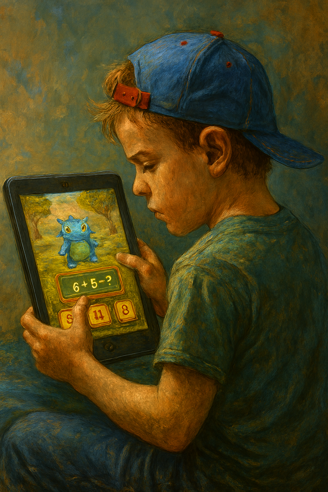

Lukey’s Guide to Math Games That Don’t Feel Like Homework
Top 3 Online Math Games for Kids
Posted on November 9, 2025 · Category: TAOLB Stories

Before heading into a scavenger maze or decoding alien symbols, Lukey Buke likes to warm up his brain with a few Earth based math games. These three are his top picks fun, fast, and secretly educational.
Prodigy Math Game
A fantasy adventure where you battle monsters using math. It adjusts to your level and makes practice feel like play.
“Prodigy has become an effective educational tool for teachers around the world to help improve their students’ math skills by using interactive learning modules, assignment creation and lesson planning tools, as well as classroom reporting and management tools.” prodigy Community
Math Playground
Logic puzzles, word problems, and arcade style games for kids who like variety and visual challenges.
“This site offers an engaging set of math and logic games with hundreds to choose from.” ToddR
DragonBox Algebra
DragonBox is a beautifully designed math game series that turns abstract concepts into playful, intuitive experiences perfect for kids who learn best through exploration and visual thinking.
“Coolmath is sneaky-smart. My tween plays it for fun, but ends up solving algebra puzzles.Coolmath is sneaky-smart. My tween plays it for fun, but ends up solving algebra puzzles.It presents itself as a simple game, with a level structure and game play reminiscent of “Angry Birds” and friends.” Leon Bambrick
Bonus: Lukey’s Own Math Tools
At Learning With Lukey Buke, you’ll find free math tools and a game designed for kids who learn differently. No ads. No signup. Just clear visuals, focused practice, and a friendly vibe.
“It’s simple, focused, and actually helps my child feel confident. Plus, no login required!”
Whether you’re prepping for a cosmic quest or just trying to master multiplication, Lukey’s got your back. Try one, try all and keep learning with wonder.
Want more Lukey?
Get new TAOLB stories delivered weekly featuring Lukey, Buck, and the wild worlds they explore. Emotional growth, expressive learning, and cosmic grit await.
📬 Get Free Weekly Stories